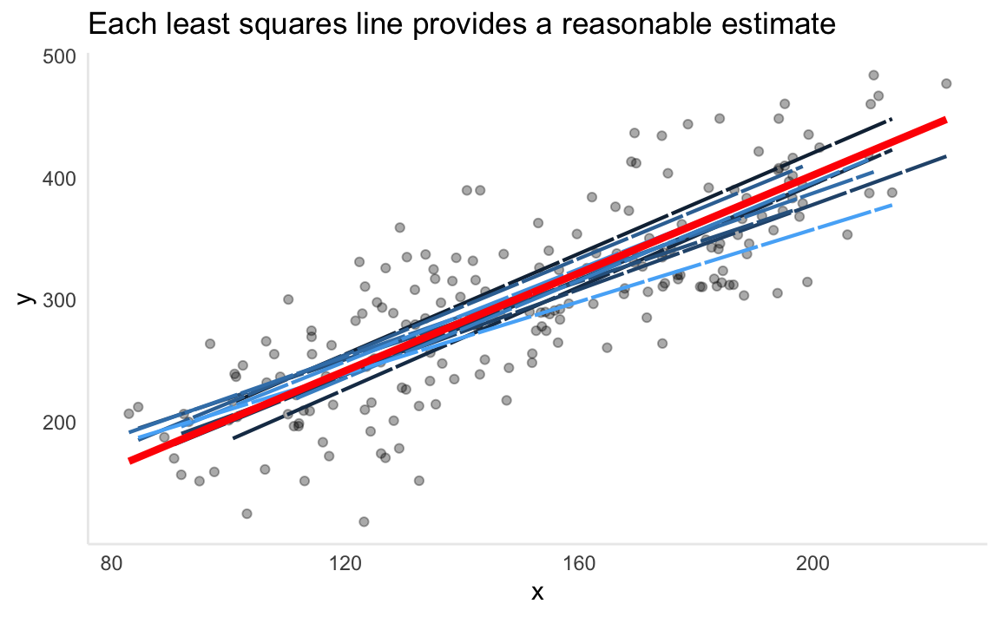
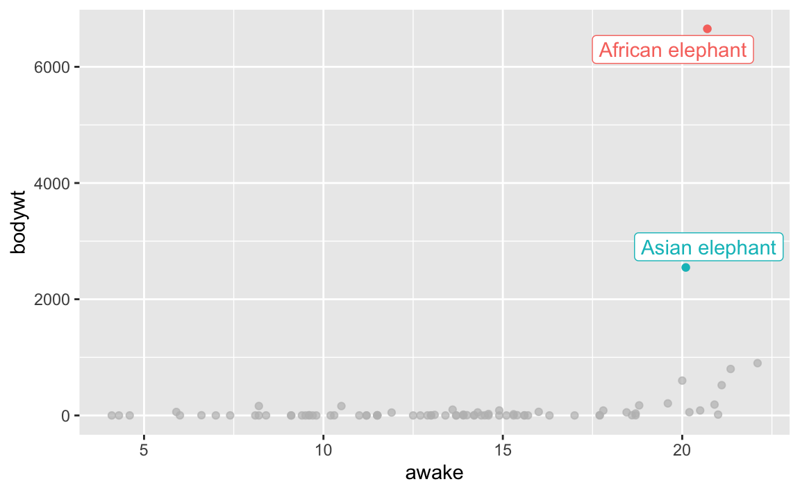
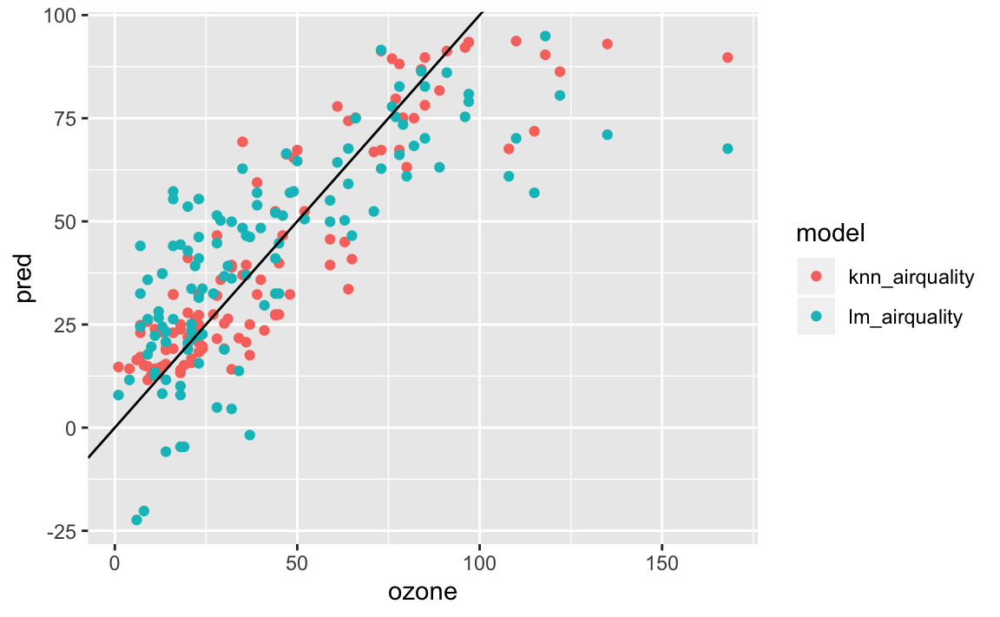

Chapter 3 Linear Regression
Linear regression is a simple yet very powerful approach in statistical learning. It is important to have a strong understanding of it before moving on to more complex learning methods.
3.1 Packages used in this chapter
library(tidyverse)
library(modelr)
library(knitr)
library(kableExtra)3.2 Simple Linear Regression
Simple linear regression is predicting a quantitative response \(Y\) based off a single predcitor \(X\).
It can be written as below:
\(Y \approx \beta_0 + \beta_1X\)
simple linear regression
\(\beta_0\) and \(\beta_1\) represent the intercept and slope terms and are together known as the coefficients. \(\beta_0\) and \(\beta_1\) represent the unknown intercept and slope terms and are together known as the coefficients. We will use our training data to estimate these parameters and thus estimate the response \(Y\) based on the value of \(X = x\):
\(\hat y = \hat\beta_0 + \hat\beta_1x\)
3.2.1 Estimating the Coefficients
We need to use data to estimate these coefficients.
\((x_1,y_1), (x_2,y_2),..., (x_n,y_n)\)
These represent the training observations, in this case pairs of \(X\) and \(Y\) measurements. The goal is to use these measurements to estimate \(\beta_0\) and \(\beta_1\) such that the linear model fits our data as close as possible. Measuring closeness can be tackled a number of ways, but least squares is the most popular.
If we let \(\hat y_i = \hat\beta_0 + \hat\beta_1x_i\) be the prediction of \(Y\) at observation \(X_i\), then \(e_i = y_i - \hat y_i\) represents the \(i\)th residual, the difference between the observed value \(y_i\) and the predicted value \(\hat y_i\). Now we can define the residual sum of squares (RSS) as
\(RSS = e_1^2 + e_2^2 + ... + e_n^2\)
residual sum of squares
or more explicitly as
\(RSS = (y_1 - \hat\beta_0 - \hat\beta_1x_2)^2 + (y_2 - \hat\beta_0 - \hat\beta_1x_2)^2 + ... + (y_n - \hat\beta_0 - \hat\beta_1x_n)^2\)
Minimizing the RSS (proof can be found here) using \(\beta_0\) and \(\beta_1\) produces:
\(\frac{\displaystyle \sum_{i=1}^{n}(x_i-\bar x)(y_i - \bar x)}{\displaystyle\sum_{i=1}^{n}(x_i - \bar x)^2}\)
least squares coefficient estimates (simple linear regression)
3.2.2 Assessing the Accuracy of the Coefficient Estimate
Remember that the true function for \(f\) contains a random error term \(\epsilon\). This means the linear relationship can be written as
\(Y = \beta_0 + \beta_1X + \epsilon\)
population regression line
\(\beta_0\) is the intercept term (value of \(Y\) when \(X = 0\)). \(\beta_1\) is the slope (how much does \(Y\) change with one-unit change of \(X\)). \(\epsilon\) is the error term that captures everything our model doesn’t (unknown variables, measurement error, unknown true relationship).
The population regression line captures the best linear approximation to the true relationship between \(X\) and \(Y\). In real data, we often don’t know the true relationship and have to rely on a set of observations. Using the observations to estimate the coefficients via least squares produces the least squares line. Let’s simulate and visualize this relationship:
- simulate
n = 200observations - compare the population regression line (
sim_y) to a number of possible least squares lines (generated from 10 different training sets of the data)
# f(x), or Y = 2 + 2x + error
sim_linear <- tibble(
b0 = 2,
b1 = 2,
x = 1:100 + rnorm(n = 200, mean = 100, sd = 15),
err = rnorm(200, sd = 50),
sim_y = b0 + b1 * x,
true_y = b0 + b1 * x + err
)
# generate 10 training sets
y <- tibble()
for (i in 1:10) {
x <- sample_frac(sim_linear, 0.1) %>% mutate(iter_set = i)
y <- y %>% bind_rows(x)
}
# apply linear model to each sample
by_iter <- y %>%
group_by(iter_set) %>%
nest()
lm_model <- function(df) {
lm(true_y ~ x, data = df)
}
by_iter <- by_iter %>%
mutate(
model = map(data, lm_model),
preds = map2(data, model, add_predictions)
)
# extract predictions
preds <- unnest(by_iter, preds)
ggplot(data = sim_linear, aes(x = x, y = true_y)) +
geom_point(alpha = 1 / 3) +
geom_line(data = preds, aes(x = x, y = pred, colour = iter_set, group = iter_set), linetype = "F1", size = .75) +
geom_line(aes(y = sim_y), colour = "red", size = 1.5) +
theme_minimal() +
theme(
legend.position = "none", panel.grid.minor = element_blank(),
panel.grid.major = element_blank(), axis.line = element_line(colour = "grey92")
) +
labs(
title = "Each least squares line provides a reasonable estimate",
y = "y"
)
The chart above demonstrates the population regression line (red) surrounded by ten different estimates of the least squares line. Notice how every least squares line (shades of blue) is different. This is because each one is generated from a random sample pulled from the simulated data. For a real-world comparison, the simulated data would be the entire population data which is often impossible to obtain. The observations used to generate the least squares line would be the sample data we have access to. In the same way a sample mean can provide a reasonable estimate of the population mean, fitting a least squares line can provide a reasonable estimate of the population regression line.
This comparison of linear regression to estimating population means touches on the topic of bias. An estimate of \(\mu\) using the the sample mean \(\hat\mu\) is unbiased. On average, the sample mean will not systemically over or underestimate \(\mu\). If we were to take a large enough estimates of \(\mu\), each produced by a particular set of observations, then this average would exactly equal \(\mu\). This concept applies to our estimates of \(\beta_0, \beta_1\) as well.
A question that can be asked is how close on average the sample mean \(\hat\mu\) is to \(\mu\). We can compute the standard error of \(\hat\mu\) to answer this.
\(Var(\hat\mu) = SE(\hat\mu)^2 = \sigma^2/n\)
standard error
This formula measures the average amount that \(\hat\mu\) differs from \(\mu\). As the number of observations \(n\) increases, the standard error decreases.
We can also use this to calculate how close \(\hat\beta_0, \hat\beta_1\) are to \(\beta_0, \beta_1\).
\(SE(\hat\beta_0)^2= \sigma^2 \left[1/n + \frac{\displaystyle \bar x^2}{\displaystyle\sum_{i=1}^{n}(x_i - \bar x)^2} \right]\)
\(SE(\hat\beta_1)^2=\frac{\displaystyle \sigma^2}{\displaystyle\sum_{i=1}^{n}(x_i - \bar x)^2}\)
where \(\sigma^2 = Var(\epsilon)\). For this to work, the assumption has to be made that the error terms \(\epsilon_i\) are uncorrelated and all share a common variance. This is often not the case, but it doesn’t mean the formula can’t be used for a decent approximation. \(\sigma^2\) is not known, but can be estimated from training observations. This estimate is the residual standard error and is given by formula \(RSE = \sqrt{RSS/(n-2}\).
What can we use these standard error formulas for? A useful technique is to calculate confidence intervals from the standard error. If we wanted to compute a 95% confidence interval for \(\beta_0,\beta_1\), it would take the form below.
\(\hat\beta_1 \pm 2 * SE(\hat\beta_1)\)
\(\hat\beta_0 \pm 2 * SE(\hat\beta_0)\)
Standard errors can also be used to perform hypotheses tests.
\(H_0\): There is no relationship between \(X\) and \(Y\), or \(\beta_1 = 0\)
null hypothesis
\(H_0\): There exists a relationship between \(X\) and \(Y\), or \(\beta_1 \neq 0\)
alternative hypothesis
To test the null hypothesis, we need to test whether \(\hat\beta_1\) is far enough away from zero to conclude that is it non-zero. How far enough from zero is determined by the value of \(\hat\beta_1\) as well as \(SE(\hat\beta_1)\). We compute a t-statistic
\(t = (\beta_1 - 0)/SE(\hat\beta_1)\)
t-statistic
This measures how many standard deviations \(\hat\beta_1\) is from 0. If there is no relationship between \(X\) and \(Y\), then \(t\) will follow a t-distribution. The t-distribution is similar to the normal distribution, but has slightly heavier tails. Like the normal distribution, we can use this to compute the probability of observing any number equal to or larger than \(|t|\). This probability is the p-value. We can interpret a p-value as the probability we would observe the sample data that produced the \(t\)-statistic, given that there is no actual relationship between the predictor \(X\) and the response \(Y\). This means that a small p-value supports the inference that there exists a relationship between the predictor and the response. In this case, based on whichever threshold \(\alpha\) (common value is 0.05) we set, a small enough p-value would lead us to reject the null hypothesis.
3.2.3 Assessing the Accuracy of the Model
Now that we determined the existence of a relationship, how can we measure how well the model fits the data?
Measuring the quality of a linear regression fit is often handled by two quantities: the residual standard error and the R^2 statistic.
3.2.3.1 Residual Standard Error
Since every observation has an associated error term \(\epsilon\), having the knowledge of true \(\beta_0\) and \(\beta_1\) will still not allow one to perfectly predict \(Y\). The residual standard error estimates the standard deviation of the error term.
\(RSE = \sqrt{1/(n-2)*RSS} = \sqrt{1/(n-2)\sum_{i=1}^{n}(y_i - \hat y)^2}\)
residual standard error
We can interpret the residual standard error as how much, on average, our predictions deviate from the true value. Whether the value is acceptable in terms of being a successful model depends on the context of the problem. Predicting hardware failure on an airplane would obviously carry much more stringent requirements than predicting the added sales from a change in a company’s advertising budget.
3.2.3.2 R^2 statistic
The RSE provides an absolute number. Given that it depends on the scale of \(Y\), comparing RSE values across different domains and datasets isn’t useful. The R^2 statistic solves this problem by measuring in terms of proportion – it measures the variance explained and so always takes a value between 0 and 1.
\(R^2 = (TSS - RSS)/TSS = 1 - RSS/TSS\)
R^2 statistic
where \(TSS = \sum_{i=1}^{n}(y_i-\bar y)^2\) is the total sum of squares. TSS can be thought of the amount of total variability in the response variable before any model is fitted to it. RSS is measured after fitting a model, and measures the amount of unexplained variance remaining in the data. Therefore, R^2 can be thought of as the proportion of variance in the data that is explained by fitting a model with \(X\). While R^2 is more intrepetable, determing what constitutes a R^2 is subjective to the problem. Relationships that are known to be linear with little variance would expect an R^2 very close to 1. In reality, a lot of real-world data is not truly linear and could be heavily influenced by unknown, immeasurable predictors. In such cases a linear approximation would be a rough fit, and a smaller R^2 would not be unordinary.
There is a relation between R^2 and the correlation.
\(r = Cor(X,Y) = \sum_{i=1}^{n}((x_i-\bar x)(y_i - \bar y))/(\sqrt{\sum_{i=1}^{n}(x_i - \bar x)^2}\sqrt{\sum_{i=1}^{n}(y_i - \bar y)^2})\)
correlation
Both measure the linear relationship between \(X\) and \(Y\), and within the simple linear regression domain, \(r^2 = R^2\). Once we move into multiple linear regression, in which we are using multiple predictors to predict a response, correlation loses effectiveness at measuring a model in whole as it can only measure the relationship between a single pair of variables.
3.3 Multiple Linear Regression
Simple linear regression works well when the data involves a single predictor variable. In reality, there are often multiple predictor variables. We will need to extend the simple linear regression model and provide each predictor variable \(p\) with a slope coefficient.
\(Y = \beta_0 + \beta_1X_1 + \beta_2X_2 + ... + \beta_pX_p + \epsilon\)
multiple linear regression
3.3.1 Estimating the Regression Coefficients
Again, we need to estimate the regression coefficients.
\(\hat y = \hat\beta_0 + \hat\beta_1X_1 + \hat\beta_2X_2 + ... + \hat\beta_pX_p\)
We will utilize the same approach of minimizing the sum of squared residuals (RSS).
\(RSS = \sum_{i=1}^{n}(y_i - \hat y_i)^2 = \sum_{i=1}^{n}(y_i - \hat\beta_0 - \hat\beta_1x_{i1} - \hat\beta_2x_{i2} - ... - \hat\beta_px_{ip})^2\)
Minimizing these coefficients is more complicated than the simple linear regression setting, and is best represented using linear algebra. See this Wikipedia section for more information on the formula.
Interpreting a particular coefficient, (say \(\beta_1\)) in a multiple regression model can be thought of as follows: if constant value for all other \(\beta_p\) are maintained, what effect would an increase in \(beta_1\) have on \(Y\)?
A side effect of this is that certain predictors which were deemed significant when contained in a simple linear regression can become insignificant when multiple predictors are involved. For an advertising example, newspaper could be a significant predictor of revenue in the simple linear regression context. However, when combined with tv and radio in a multiple linear regression setting, the effects of increasing newspaper spend while maintaining tv and radio becomes insignificant. This could be due to a correlation of newspaper spend in markets where radio spend is high. Multiple linear regression exposes predictors that act as “surrogates” for others due to correlation.
3.3.2 Some Important Questions
3.3.2.1 Is There a Relationship Between the Response and Predictors?
To check this, we need to check whethere all \(p\) coefficients are zero, i.e. \(\beta_1 = \beta_2 = ... = \beta_p = 0\). We test the null hypothesis,
\(H_o:\beta_1 = \beta_2 = ... = \beta_p = 0\)
against the alternative
\(H_a:\) at least one \(\beta_j\) is non-zero
The hypothesis test is performed by computing the \(F-statistic\),
\(F = \frac{(TSS-RSS)/p}{RSS/(n-p-1)}\)
correlation
If linear model assumptions are correct, one can show that
\(E\{RSS/(n-p-1)\} = \sigma^2\)
and that, provided \(H_o\) is true,
\(E\{(TSS-RSS)/p\} = \sigma^2\)
In simple terms, if \(H_o\) were true and all of the predictors have regression coefficients of 0, we would expect the unexplained variance of the model to be approximately equal to that of the total variance, and both the numerator and the denominator of the F-statistic formula to be equal. When there is no relationship between the response and predictors, the F-statistic will take on a value close to 1. However, as RSS shrinks (the model begins to account for more of the variance), the numerator grows and the denominator shrinks, both causing the F-statistic to increase. We can think of the F-statistic as a ratio between the explained variance and unexplained variance. As the explained variance grows larger than the unexplained portion, the likelihood that we reject the null hypothesis grows.
How large does the F-statistic need to be to reject the null hypothesis? This depends on \(n\) and \(p\). As \(n\) grows, F-statistics closer to 1 may provide sufficient evidence to reject \(H_o\). If \(H_o\) is true and \(\epsilon_i\) have a normal distribution, the F-statistic follows an F-distribution. We can compute the p-value for any value of \(n\) and \(p\) associated with an F-statistic.
# TODO remove this section?Sometimes we want to test whether a particular subset of \(q\) of the coefficients are zero.
The null hypothesis could be
\(H_o : \beta_{p-q+1} = \beta_{p-q+2} = \beta_p = 0\)
In this case we fit a second model that uses all the variables except the last \(q\). We will call the residual sum of squares for the second model \(RSS_0\).
Then, the F-statistic is,
\(F = \frac{(RSS_0 - RSS)/q}{RSS(n-p-1)}\)
We are testing a model without the \(q\) predictors and seeing how it compares to the original model containing all the predictors.
Why do we need to look at overall F-statistics if we have individual p-values of the predictors? There are scenarios where individual predictors, by chance, will have small p-values, even in the absence of any true association. This could lead us to incorrectly diagnose a relationship.
The overall F-statistic does not suffer this problem because it adjusts for the number of predictors.
The F-statistic approach works when the number of predictors \(p\) is small compared to \(n\). Sometimes, we have situations where \(p > n\). In this situation, ther eare more coefficients \(\beta_j\) to estimate than observations from which to estimate them. Such situations requires different approaches that we haven’t discussed yet (see chapter 6)
# TODO add chapter 6 link3.3.2.2 Deciding on Important Variables
The first thing we do in a multiple regression is to compute the F-statistic and determine that at least one of the predictors is related to the response.
The task of determining which predictors are associated with the response is referred to as variable selection. We could try out a lot of different models with combinations of predictors, \(2^p\), but this is not practical as \(p\) grows.
There are three ways to approach this task:
Forward selection: we begin with the null model, which contains an intercept but no predictors. We then fit \(p\) simple linear regressions and add to the null model the variable that results in the lowest RSS. We then repeat the process to determine the lowest RSS of the now two-variable model, continuing until some stopping rule is satisfied.
Backward selection: Start with all the variables in the model, remove the variable with the largest p-value. Then, for the new \((p - 1)\)-variable model, do the same. Continue until stopping rule is reached (for example, some p-value threshold)
Mixed selection: Start with no variables, and proceed with forward selection. If any p-value of added variables pass a threshold once new predictors are added, we remove them. We continue the forward and backward until all variables in model have a sufficiently low p-value.
3.3.2.3 Model Fit
Two common methods of model fit are the \(RSE\) and \(R^2\), the fraction of variance explained.
More on \(R^2\):
- Values closer to
1indicate a better fit - Adding more variables can only increase it
- Adding variables that barely increase it can lead to overfitting
Plotting the model can also be useful.
3.3.2.4 Predictions
Three sorts of uncertainty within a given model:
The coefficient estimates \(\hat\beta_0 + \hat\beta_1...,\hat\beta_p\) are estimates for \(\beta_0 + \beta_1...,\beta_p\). This inaccuracy is part of the reducible error. We can compute a confidence interval to determine how close \(\hat Y\) is to \(f(X)\).
Model bias can result from the fact that we are fitting a linear approximation to the true surface of \(f(X)\).
Even if we knew \(f(X)\), we still have random error \(\epsilon\), which is the irreducible error. We can use prediction intervals to estimate how far \(Y\) will differ from \(\hat Y\). These will always be larger than confidence intervals, because they incorporate both the reducible + irreducible error.
3.3.3 Other Considerations in the Regression Model
So far, all predictors have been quantitative. However, it is common to have qualitative variables as well.
Take a look at the ISLR::Credit dataset, which has a mix of both types.
tidy_credit <- ISLR::Credit %>%
as_tibble() %>%
janitor::clean_names()
tidy_credit## # A tibble: 400 x 12
## id income limit rating cards age education gender student married
## <int> <dbl> <int> <int> <int> <int> <int> <fct> <fct> <fct>
## 1 1 14.9 3606 283 2 34 11 " Mal… No Yes
## 2 2 106. 6645 483 3 82 15 Female Yes Yes
## 3 3 105. 7075 514 4 71 11 " Mal… No No
## 4 4 149. 9504 681 3 36 11 Female No No
## 5 5 55.9 4897 357 2 68 16 " Mal… No Yes
## 6 6 80.2 8047 569 4 77 10 " Mal… No No
## # … with 394 more rows, and 2 more variables: ethnicity <fct>,
## # balance <int>3.3.3.1 Predictors with only Two Levels
Suppose we wish to investigate difference in credit card balance between males and females, ignoring all other variables. If a qualitative variable (also known as a factor) only has two possible values, then incorporating it into a model is easy. We can create a binomial dummy variable that takes on two values. For gender, this could be a variable that is 0 if observation has value male, and 1 if observation has value female. This variable can then be used in the regression equation.
Take note that lm() automatically creates dummy variables when given qualitative predictors.
# TODO insert regression equationcredit_model <- lm(balance ~ gender, data = tidy_credit)
tidy_credit_model <- broom::tidy(credit_model)
tidy_credit_model## # A tibble: 2 x 5
## term estimate std.error statistic p.value
## <chr> <dbl> <dbl> <dbl> <dbl>
## 1 (Intercept) 510. 33.1 15.4 2.91e-42
## 2 genderFemale 19.7 46.1 0.429 6.69e- 1How to interpret this: males are estimated to carry a balance of $510. Meanwhile, females are expected to carry an additional \(19.70\) in debt. Notice the p-value is very high, indicating there is no significant difference between genders.
3.3.4 Qualitative Predictors with More than Two Levels
A single dummy variable can not represent all the possible values. We can create additional dummy variables for this.
Let’s make a dummy variable from ethnicity column, which takes three distinct values. This will yield two dummy variables.
tidy_credit %>% distinct(ethnicity)## # A tibble: 3 x 1
## ethnicity
## <fct>
## 1 Caucasian
## 2 Asian
## 3 African AmericanfastDummies package will be used to generate these. In this case, African American serves as the baseline, and dummy variables are created for Caucasian and Asian. There will always be one fewer dummy variable than the number of levels.
tidy_credit_dummy <- tidy_credit %>%
fastDummies::dummy_cols(select_columns = "ethnicity", remove_first_dummy = TRUE) %>%
janitor::clean_names()
tidy_credit_dummy %>%
select(starts_with("ethnicity"))## # A tibble: 400 x 3
## ethnicity ethnicity_asian ethnicity_caucasian
## <fct> <int> <int>
## 1 Caucasian 0 1
## 2 Asian 1 0
## 3 Asian 1 0
## 4 Asian 1 0
## 5 Caucasian 0 1
## 6 Caucasian 0 1
## # … with 394 more rowsWe can again run the model with newly created dummy variables. Keep in mind, prior creation is not necessary, as lm will generate them automatically.
ethnicity_model <- lm(balance ~ ethnicity_asian + ethnicity_caucasian, data = tidy_credit_dummy)
broom::tidy(ethnicity_model)## # A tibble: 3 x 5
## term estimate std.error statistic p.value
## <chr> <dbl> <dbl> <dbl> <dbl>
## 1 (Intercept) 531. 46.3 11.5 1.77e-26
## 2 ethnicity_asian -18.7 65.0 -0.287 7.74e- 1
## 3 ethnicity_caucasian -12.5 56.7 -0.221 8.26e- 13.3.5 Extensions of the Linear Model
The linear regression model makes highly restrictive assumptions. Two of the most important are that the relationship between predictors and response are additive and linear.
Additive means that the effect of changes in a predictor \(X_j\) on the response \(Y\) is independet of the values of the other predictors. Linear means that the the change in response \(Y\) to a one-unit change in \(X_j\) is constant, regardless of the value of \(X_j\).
Here are some common approaches of extending the linear model.
3.3.5.1 Removing the Additive Assumption
The additive property assumes that predictors slope terms are independent of the values of other predictors. However, this is not always the case. Imagine an advertising scenario where the effectiveness of TV spend is affected by the radio spend. This is known as an interaction effect. Imagine we have a model with two predictors, but they are not strictly additive. We could extend this model by adding an interaction term to it.
\(Y = \beta_0 + \beta_1X_1 + \beta_2X_2 + \beta_3X_1X_2 + \epsilon\)
Now, the effect of \(X_1\) on \(Y\) is no longer constant; adjusting \(X_2\) will change the impact of \(X_1\) on \(Y\).
An easy scenario is the productivity of a factory. Adding lines and workers both would increase productivity. However, the effect is not purely additive. Adding lines without having workers to operate them would not increase productivity. There is an interaction between workers and lines that needs to be accounted for.
The hierarchical principle states that if we include an interaction in a model, we should also include the main effects, even if the p-values associated with their coefficients are not significant.
It’s also possible for qualitative and quantitative variables to interact with each other. We will again use the Credit data set. Suppose we wish to predict balance using the income (quantitative) and student (qualitative) variables.
First, let’s take a look at what it looks like to fit this model without an interaction term. Both income and student are significant.
lm_credit <- lm(balance ~ income + student, data = tidy_credit)
lm_credit %>% broom::tidy()## # A tibble: 3 x 5
## term estimate std.error statistic p.value
## <chr> <dbl> <dbl> <dbl> <dbl>
## 1 (Intercept) 211. 32.5 6.51 2.34e-10
## 2 income 5.98 0.557 10.8 7.82e-24
## 3 studentYes 383. 65.3 5.86 9.78e- 9tidy_credit %>%
modelr::add_predictions(lm_credit) %>%
ggplot(aes(x = income, y = pred, colour = student)) +
geom_line(size = 1.5) +
geom_point(aes(y = balance, colour = student), fill = "grey", pch = 21, alpha = 1 / 2) +
theme_minimal()It’s a pretty good fit, and because there is no interaction terms, the lines are parallel. Notice how many more observations there are to fit on for the non-students.
Now, let’s add an interaction term.
lm_credit_int <- lm(balance ~ income + student + income * student, data = tidy_credit)
lm_credit_int %>% broom::tidy()## # A tibble: 4 x 5
## term estimate std.error statistic p.value
## <chr> <dbl> <dbl> <dbl> <dbl>
## 1 (Intercept) 201. 33.7 5.95 5.79e- 9
## 2 income 6.22 0.592 10.5 6.34e-23
## 3 studentYes 477. 104. 4.57 6.59e- 6
## 4 income:studentYes -2.00 1.73 -1.15 2.49e- 1tidy_credit %>%
modelr::add_predictions(lm_credit_int) %>%
ggplot(aes(x = income, y = pred, colour = student)) +
geom_line(size = 1.5) +
geom_point(aes(y = balance, colour = student), fill = "grey", pch = 21, alpha = 1 / 2) +
theme_minimal()The model now takes into account how income and student interact with each other. Interpreting the chart suggests that increases in income among students has a smaller effect on balance than it does to non-students.
Does it fit better?
models <- list(without_interaction = lm_credit, with_interaction = lm_credit_int)
purrr::map_df(models, broom::glance, .id = "model") %>%
select(model, r.squared, statistic, p.value, df)## # A tibble: 2 x 5
## model r.squared statistic p.value df
## <chr> <dbl> <dbl> <dbl> <int>
## 1 without_interaction 0.277 76.2 9.64e-29 3
## 2 with_interaction 0.280 51.3 4.94e-28 4Not by much. The model with the interaction term has a slightly higher \(R^2\), but the added complexity of the model, combined with the small number of observations of students in the dataset, suggests overfitting.
3.3.5.2 Non-linear Relationships
The linear model assumes a linear relationship between the response and predictors. We can extend the linear model to accomodate non-linear relationships using polynomial regression.
A way to incorporate non-linear associations into a linear model is to include transformed versions of the predictor in the model. For example, within the Auto dataset, predicting mpg with a second-order polynomial of horsepower would look like this:
\(mpg = \beta_0 + \beta_1horsepower + \beta_2horsepower^2 + \epsilon\)
Let’s look at the Auto dataset with models of different polynomial degrees overlaid. Clearly, the data is not linear, exhibiting a quadratic shape.
tidy_auto <- ISLR::Auto %>% as_tibble()
lm_auto <- lm(mpg ~ horsepower, data = tidy_auto)
lm_auto2 <- lm(mpg ~ poly(horsepower, 2), data = tidy_auto)
lm_auto5 <- lm(mpg ~ poly(horsepower, 5), data = tidy_auto)
tidy_auto %>%
gather_predictions(lm_auto, lm_auto2, lm_auto5) %>%
ggplot(aes(x = horsepower, y = mpg)) +
geom_point(alpha = 1 / 3, pch = 21) +
geom_line(aes(y = pred, colour = model), size = 1.5)The second-order polynomial does a good job of fitting the data, while the fifth-order seems to be unnecessary. The model performance reflects that:
models <- list(
linear = lm_auto,
second_order = lm_auto2,
fifth_order = lm_auto5
)
purrr::map_df(models, broom::glance, .id = "model") %>%
select(model, r.squared, statistic, p.value, df)## # A tibble: 3 x 5
## model r.squared statistic p.value df
## <chr> <dbl> <dbl> <dbl> <int>
## 1 linear 0.606 600. 7.03e-81 2
## 2 second_order 0.688 428. 5.40e-99 3
## 3 fifth_order 0.697 177. 1.16e-97 6The second-order model has significantly higher R^2, and only one more degree of freedom.
This approach of extending linear models to accomodate non-linear relationships is known as polynomial regression.
3.3.6 Potential Problems
Many problems can occur when fitting a linear model to a data set.
- Non-linearity of the response-predictor relationship.
- Correlation of error terms.
- Non-constant variance of error terms
- Outliers
- High-leverage points
- Collinearity
3.3.6.1 1. Non-linearity of the data
The linear model assumes a straight-line relationship between the predictors and the response. If this is not the case, the inference and prediction accuracy of the fit are suspect.
We can use a residual plot to visualize when a linear model is placed on to a non-linear relationship. For a simple linear regression model, we plot the residuals \(e_i = y_i - \hat{y}_i\) compared to the predictor. For multiple regression, we plot the residuals versus the predicted values \(\hat{y}_i\). If the relationship is linear, the residuals should exhibit a random pattern.
Let’s take the Auto dataset and plot the residuals compared to horsepower for each model we fit. Notice in the model containing no quadratic term is U-shaped, indicating a non-linear relationship. The model that contains horsepower^2 exhibits little pattern in the residuals, indicating a better fit.
tidy_auto %>%
gather_predictions(lm_auto, lm_auto2, lm_auto5) %>%
ggplot(aes(x = horsepower, y = mpg-pred, colour=model)) +
geom_point(alpha = 1 / 3) +
geom_hline(yintercept = 0, size = 1.5, colour="grey") +
facet_wrap(~model, nrow=3)If the residual plot indicates that there non-linear associations in the data, a simple approach is to use non-linear transofmrations of the predictors.
3.3.6.2 2. Correlation of Error Terms
The linear regression model assumes that the error terms \(\epsilon_1,\epsilon_2,...,\epsilon_n\) are uncorrelated.
This means that for a given error term \(e_i\), no information is provided about the value \(e_{i+1}\). The standard errors that are computed for the estimated regression coefficients are based on this assumption.
If there is a correlation among the error terms, than the estimated standard errors will tend to underestimate the true standard errors, producing confidence and prediction intervals narrower than they should be. Given the incorrect assumption, a 95% confidence interval may have a much lower probability than 0.95 of containing the true value of the parameter. P-values would also be lower than they should be, giving us an unwarranted sense of confidence in our model.
These correlations occur frequently in time series data, which consists of observations obtained at discrete points in time. In many cases, observations that are obtained at adjacent time periods points will have positively correlated errors.
We can again plot the residuals as a function of time to see if this is the case. If no correlation, there should be no pattern in the residuals. If error terms exhibit correlation, we may see that adjacent residuals exhibit similar values, known as tracking.
This can also happen outside of time series data. The assumption of uncorrelated errors is extremely important for linear regression as well as other statistical methods.
# TODO add a residual plot for time series with correlated error terms, similar to pg. 95tidy_sunspot <- data.frame(y=as.matrix(sunspot.year), ds=time(sunspot.year)) %>% as_tibble()
tidy_sunspot
sunspot_lm <- lm(data = tidy_sunspot, y ~ ds)
tidy_sunspot %>%
add_predictions(sunspot_lm) %>%
ggplot(aes(x=ds, y=pred-y)) +
geom_point() +
geom_line() +
geom_smooth(method="lm", se = FALSE)3.3.6.3 3. Non-constant Variance of Error Terms
Another assumption of linear regression is that the error terms have a constant variance, \(Var(\epsilon_i) = \sigma^2\). Standard errors, confidence intervals, and hypothesis tests rely upon this assumption.
It is common for error terms to exhiti non-constant variance. Non-constant variance in the errors, also known as heteroscedasticity, can be identified from a funnel shape in the residual plot.
Let’s take a look at the MASS::cats dataset, which contains observations of various cats sex, body weight, and heart weight. We fit a linear model to it, and then plot the residuals.
I’ve added a linear fit to the residual plot itself. Observe how the error terms begin to funnel out as bwt increases, indicating non-constant variance of the error terms.
tidy_cats <- MASS::cats %>% as_tibble() %>% janitor::clean_names()
lm_cats <- lm(data = tidy_cats, hwt ~ bwt)
tidy_cats %>%
add_predictions(lm_cats) %>%
ggplot(aes(x = bwt, y = hwt - pred)) +
geom_point() +
geom_smooth(method="lm", level = 0.99)
# TODO add OLS method to this
# get weights of each response
# fit a linear model on the residuals
tidy_cats_res <- tidy_cats %>%
add_predictions(lm_cats) %>%
mutate(res = hwt - pred) %>%
select(bwt, hwt, res)
lm_cats_res <- lm(data = tidy_cats_res, res ~ hwt)
cat_weights <- tidy_cats_res %>%
add_predictions(lm_cats_res) %>%
mutate(res_var = (res-pred)^2) %>%
mutate(weight = 1 / res_var) %>%
pull(weight)
lm_cats_weights <- lm(data = tidy_cats, hwt ~ bwt, weights = cat_weights)
tidy_cats %>%
gather_predictions(lm_cats, lm_cats_weights) %>%
ggplot(aes(x = bwt, y = hwt - pred, colour = model)) +
geom_point(aes(y = hwt-pred, colour = model)) +
geom_smooth(method="lm")When this occurs, there a few ways to remedy it. You could transform the response \(Y\) using a function such as \(logY\) or \(\sqrt{Y}\). If we have a good idea of the variance of each response, we could fit our model using weighted least squares, which weights proportional to the inverse of the expected variance of an observation.
3.3.6.4 4. Outliers
An outlier is a point for which \(y_i\) is far from the value predicted by the model. These can arise for a variety of reasons, such as incorrect recording of an observation during data collection.
For the msleep dataset below, which contains data on mammal sleep durations, I’ve highlighted two observations that most would consider outliers. This is for the African elephant and Asian elephant mammals, who’s bodyweights are far and away from the rest of mammals. There are others that could be considered outliers as well. Identifying outliers is an often arbitrary process.
msleep %>%
ggplot(aes(x = awake, y = bodywt, colour = name)) +
geom_point() +
gghighlight::gghighlight(bodywt>2000)
Let’s fit a linear model to predict body weight from how long the animal is awake.
Notice how the data that maintains the elephant observations significantly affects the slope, drawing the regression line away from the majority of observations.
lm_sleep <- lm(data = msleep, bodywt ~ awake)
lm_sleep_filtered <- lm(data = msleep %>% filter(!name %in% c('African elephant', 'Asian elephant')), bodywt ~ awake)
msleep %>%
gather_predictions(lm_sleep, lm_sleep_filtered) %>%
ggplot(aes(x = awake, y = bodywt)) +
geom_point(pch=21, alpha = 1/3) +
geom_line(aes(y = pred, colour = model), size = 1.5) +
scale_colour_viridis_d() +
theme_minimal()The model excluding the elephant observations has a significantly higher \(R^2\), which indicates a better fit.
models <- list(with_outliers = lm_sleep,
without_outliers = lm_sleep_filtered)
purrr::map_df(models, broom::glance, .id = "model") %>%
select(model, r.squared, statistic, p.value, df)## # A tibble: 2 x 5
## model r.squared statistic p.value df
## <chr> <dbl> <dbl> <dbl> <int>
## 1 with_outliers 0.0973 8.73 0.00409 2
## 2 without_outliers 0.222 22.5 0.00000900 2Another way of handling an outlier is transforming the response variable. Upon inspection of the scatterplot, it becomes clear that the relationship between bodywt and awake is not linear. If we take the same dataset and apply a log function to response variable bodywt, we see that the outliers no longer exists.
msleep %>%
ggplot(aes(x = awake, y = log(bodywt))) +
geom_smooth(method = "lm") +
geom_point()The model that uses log(bodywt) as the response also has better performance than both models above.
lm_sleep_log <- lm(data = msleep, log(bodywt) ~ awake)
lm_sleep_log %>% broom::glance() %>%
select(r.squared, statistic, p.value, df)## # A tibble: 1 x 4
## r.squared statistic p.value df
## <dbl> <dbl> <dbl> <int>
## 1 0.324 38.7 0.0000000202 23.3.6.5 5. High Leverage Points
Observations with high leverage have an unusual value for \(x_i\). In a simple regression model, these are practically the same as outliers (I could have flipped predictors with response in my mammal sleep model above). High leverage points are observations that significantly move the regression line. However, in multiple regression, it is possible to have an observation that is well within the range of each individual predictor’s values, but unusual terms of the full set of predictors.
Let’s look at temp and ozone data from airquality dataset. Plenty of observations have ozone > 100 and temp < 80, but the combination is rare. If we fit models with and without this leverage point, we can see how the regression line moves.
tidy_airquality <- airquality %>%
as_tibble() %>%
janitor::clean_names()
tidy_airquality %>%
ggplot(aes(x = ozone, y = temp)) + geom_point() + gghighlight::gghighlight(ozone > 100 & temp < 80)lm_temp <- lm(data = tidy_airquality, temp ~ ozone)
lm_temp_filtered <- lm(data = tidy_airquality %>% filter(!(ozone > 100 & temp < 80)), temp ~ ozone)Notice the slight change in the fit. This observation isn’t that extreme, but still produces a visible difference in fit. More extreme observations would move this line even further, potentially causing an improper fit.
tidy_airquality %>%
gather_predictions(lm_temp, lm_temp_filtered) %>%
ggplot(aes(x = ozone, y = pred, colour = model)) +
geom_line() +
geom_point(aes(y = temp), alpha = 1/3, colour = "grey")
The model without the strange observation performs slightly better. In reality, I would probably include it as going from an \(R^2\) of 0.488 to 0.506 isn’t worth the manual effort.
models <- list(with_leverage = lm_temp,
without_leverage = lm_temp_filtered)
purrr::map_df(models, broom::glance, .id = "model") %>%
select(model, r.squared, statistic, p.value, df)## # A tibble: 2 x 5
## model r.squared statistic p.value df
## <chr> <dbl> <dbl> <dbl> <int>
## 1 with_leverage 0.488 109. 2.93e-18 2
## 2 without_leverage 0.506 116. 5.05e-19 2We can also quantify an observation’s leverage by computing the \(leverage statistic\). A large value of this statistic indicates an observation with high leverage. For a simple linear regression,
\(h_i = \frac{1}{n} + \frac{x_i - \bar{x}^2}{\sum_{i'=1}^{n}}\)
leverage statistic
As \(x_i\) increases from \(\bar{x}\), \(h_i\) increases. Combined with a high residual (outlier), a high-leverage observation could be dangerous.
3.3.6.6 6. Colinearity
Collinearity is when two or more predictor variables are closely related to one another.
If we look at our tidy_credit tibble, we see that rating and limit are very highly correlated with one another.
tidy_credit %>% ggplot(aes(x = rating, y = limit)) + geom_point()
The effects of collinearity can make it difficult to separate out the individual effects of collinear variables on the response. Since limit and rating move together, it can be hard to determine how each one separately is associated with the response, balance.
# TODO add contour plot
# clean up what this link did: https://yetanotheriteration.netlify.com/2018/01/high-collinearity-effect-in-regressions/Two multiple regression models show the effects of regressing balance on age + limit versus rating + limit. Notice the large p-value for limit, combined with the >10x increase in standard error for its coefficient compared to the original model. It’s effects have been masked by the collinearity it shares with rating.
lm_age_limit <- lm(data = tidy_credit, balance ~ age + limit)
lm_rating_limit <- lm(data = tidy_credit, balance ~ rating + limit)
models <- list(`Balance ~ Age + Limit` = lm_age_limit,
`Balance ~ Rating + Limit` = lm_rating_limit)
purrr::map_df(models, broom::tidy, .id = "model")## # A tibble: 6 x 6
## model term estimate std.error statistic p.value
## <chr> <chr> <dbl> <dbl> <dbl> <dbl>
## 1 Balance ~ Age + Limit (Intercept) -1.73e+2 43.8 -3.96 9.01e- 5
## 2 Balance ~ Age + Limit age -2.29e+0 0.672 -3.41 7.23e- 4
## 3 Balance ~ Age + Limit limit 1.73e-1 0.00503 34.5 1.63e-121
## 4 Balance ~ Rating + Li… (Intercept) -3.78e+2 45.3 -8.34 1.21e- 15
## 5 Balance ~ Rating + Li… rating 2.20e+0 0.952 2.31 2.13e- 2
## 6 Balance ~ Rating + Li… limit 2.45e-2 0.0638 0.384 7.01e- 1The growth in the standard error caused by collinearity caises the t-statistic (\(B_j\) divided by it’s standard error) to decline. As a result, we may fail to reject \(H_0: \beta_j = 0\). This means that the power of the hypothesis test – the probability of correctly detecting a non-zero coefficient – is reduced by collinearity. Thus, it is desirable to identify and address collinearity problems while fitting the model.
A simple way is to look at the correlation matrix of the predictors.
library(corrr)
tidy_credit_corr <- tidy_credit %>%
select_if(is.numeric) %>%
select(-id) %>%
corrr::correlate() %>%
corrr:::stretch() %>%
filter(!is.na(r))
# remove duplicate combinations of x, y
tidy_credit_corr <- tidy_credit_corr %>%
mutate(sort_var = map2_chr(x, y, ~toString(sort(c(.x, .y))))) %>%
distinct(sort_var, .keep_all = TRUE) %>%
select(-sort_var)
tidy_credit_corr %>% arrange(desc(abs(r))) %>%
filter(abs(r) > 0.05) %>%
kable() %>%
kableExtra::kable_styling()| x | y | r |
|---|---|---|
| limit | rating | 0.9968797 |
| rating | balance | 0.8636252 |
| limit | balance | 0.8616973 |
| income | limit | 0.7920883 |
| income | rating | 0.7913776 |
| income | balance | 0.4636565 |
| income | age | 0.1753384 |
| rating | age | 0.1031650 |
| limit | age | 0.1008879 |
| cards | balance | 0.0864563 |
| rating | cards | 0.0532390 |
| cards | education | -0.0510842 |
Here we can see the strongest correlation is between limit and rating, rating and balance, which makes sense. Card issuers give higher limit to those with higher rating, and rating is directly affted by balance. As we move down the table, weaker correlations appear, such as cards and education.
Such tables allow one to identify potential collinearity problems between two predictors. However, it is possible for collinearity to exist between three or more variables even if there is no correlation between any of the pairs in that group. This is called multicollinearity. In this case, we compute the variance inflation factor (VIF). The VIF is the ratio of the variance of \(\hat\beta_j\) when fitting the full model divided by the variance of \(\hat\beta_j\) if fit on its own.
VIF can also be thought of as checking if a predictor can be explained by all the other predictors in the dataset. In this case, that predictor provides no novel information, but can add a significant amount of variance. Such predictors with high VIF are a candidate for removal from the model.
Here is a video (Python) explaining how to use VIF to tackle multicollinearity:
A rule of thumb is that a VIF value exceeding 10 indicates a problematic amount of collinearity.
The VIF for each variable can be computed using the formula
\(VIF(\hat\beta_j) = \frac{1}{1-R^2_{X_j|X_-j}}\)
leverage statistic
where \(R^2_{X_j|X_-j}\) is the \(R^2\) from a regression of \(X_j\) onto all of the other predictors. If a variable \(X_j\) has a high \(R^2\) when regressed onto all other predictor variables (other predictor variables can explain a large amount of \(X_j\)’s variance), the VIF will be high.
In R, we can use the car package to calculate GVIF for a lm object.
car::vif(lm(data = tidy_credit %>%
select(-id), balance ~ .)) %>%
as_tibble(rownames = "variable") %>%
arrange(desc(GVIF))## # A tibble: 10 x 4
## variable GVIF Df `GVIF^(1/(2*Df))`
## <chr> <dbl> <dbl> <dbl>
## 1 rating 236. 1 15.4
## 2 limit 234. 1 15.3
## 3 income 2.79 1 1.67
## 4 cards 1.45 1 1.20
## 5 age 1.05 1 1.03
## 6 married 1.04 1 1.02
## # … with 4 more rowsAs we can see here, the most problematic variables are rating and limit, which both exceed VIFs of 200. It seems that rating and limit can be explained by the other predictors in the dataset.
There are two simple solutions for this. The first is to drop problematic variables from the regression.
Let’s drop rating and see what happens.
car::vif(lm(data = tidy_credit %>%
select(-id, -rating), balance ~ .)) %>%
as_tibble(rownames = "variable") %>%
arrange(desc(GVIF))## # A tibble: 9 x 4
## variable GVIF Df `GVIF^(1/(2*Df))`
## <chr> <dbl> <dbl> <dbl>
## 1 income 2.77 1 1.67
## 2 limit 2.71 1 1.65
## 3 age 1.05 1 1.03
## 4 married 1.03 1 1.02
## 5 ethnicity 1.03 2 1.01
## 6 student 1.02 1 1.01
## # … with 3 more rowsJust like that, limit goes from VIF >200 down to ~2.7. Is the fit compromised? The model without rating has an \(R^2\) of 0.954, while the model containing it has 0.955. Such negligible change in \(R_2\) shows the redundant information provided by the variable. Reducing the multicollinearity gives us an equivalent level fit while reducing the chance for a significant predictor to end up with an insignificant coefficient in our model. This is especially important when extending a pre-existing model on to a new, unknown sample.
Another solution would be to combine collinear variables into a single predictor. For example, taking the average of standardized versions of limit and rating and creating a new variable that measures credit worthiness.
3.3.7 The Marketing Plan
# TODOWe return to the seven questions we set out to answer regarding Advertising data.
3.3.8 Comparison of Linear Regression with K-Nearest Neighbors
Linear regression is an example of a parametric approach because it assumes a linear functional form for \(f(X)\). The advantages are:
- estimating small number of coefficients is easy
- coefficients have simple intrepretations
- tests of statistical significance are easily performed
However, the strong assumptions of the form of \(f(X)\) come at a cost. If the functional form is far from the truth, then the model will perform poorly in terms of prediction accuracy.
Non-parametric methods do not explicitly assume a parametric form for \(f(X)\), and thereby provide an alternative and more flexible approach for performing regression. Let’s consider one of the simplest and best-known non-parametric methods, K-nearest neighbors regression (KNN regression).
Given a value for \(K\) and a prediction point \(x_0\), KNN regression first identifies the \(K\) training observations that are closest to \(x_0\), represented by \(\mathcal{N}_0\). It then estimates \(f(x_0)\) using the average of all the training response in \(\mathcal{N}_0\). In other words,
\(\hat{f}(x_0) = \frac{1}{K}\sum_{x_i\in\mathcal{N_0}y_i\)
When \(K\) is small, the KNN fits close to the training observations, and provides a rough step function. As \(K\) increases, the prediction is averaged over a larger number of observations, producing small regions of constant prediction and smoother fits. The optimal value for \(K\) depends on the bias-variance tradeoff.
A small value of \(K\) provides the most flexible fit, which will have low bias but high variance. The high variance comes from the prediction in a particular region being dependant on a small number of observations. In contrast, larger values of \(K\) provide a smoother and less variable fit; incorporating the average of a larger number of points, giving a single observation less weight in the prediction. However, this smoothing can cause bias by masking some of the structure in \(f(x)\). In Chapter 5, (TODO add link), we introduce several approaches for estimating test error rates, which can be used identify optimal value of \(K\).
We can use the caret package to fit a number of \(k\)-values with the KNN algorithm, and see which produces the best R^2. This example doesn’t take into account the bias introduced by a larger \(k\)-value, and how that might perform on a test dataset.
A \(k\) of 5 produces the best fit.
# TODO plot 3d with decision boundaries for multiple k
library(caret)
k_values = data.frame(k = c(seq(1:10)))
knn_airquality <- train(data = tidy_airquality %>% filter(!is.na(ozone)), ozone ~ temp + wind, method = "knn",tuneGrid = k_values, metric = "Rsquared")
knn_results <- knn_airquality$results %>% as_tibble()
knn_results## # A tibble: 10 x 7
## k RMSE Rsquared MAE RMSESD RsquaredSD MAESD
## <int> <dbl> <dbl> <dbl> <dbl> <dbl> <dbl>
## 1 1 22.9 0.564 15.3 3.24 0.0864 2.01
## 2 2 20.6 0.635 14.4 3.30 0.0915 1.89
## 3 3 19.7 0.658 14.0 2.44 0.0731 1.52
## 4 4 19.1 0.665 13.9 2.56 0.0705 1.46
## 5 5 18.9 0.674 13.7 2.72 0.0675 1.40
## 6 6 18.7 0.683 13.4 2.84 0.0718 1.51
## # … with 4 more rowsIn what setting will a parametric approach outperform a non-parametric approach such as KNN? The parametric approach will outperform the non-parametric approach if the parametric form that has been selected is close to the true form of \(f\).
Let’s take our ozone example and compare KNN to linear regression. The linear model produces an \(R^2\) of 0.57, compared to KNN’s 0.64. Is KNN’s lack of interpretability worth the 0.07 gain in \(R^2\)? Probably not.
# TODO split into training / test and compare KNN vs LinearInterestingly, the plot below demonstrates a shortcoming of linear regression as well, and the value of domain knowledge in approaching modeling. ozone values should have a minimum value of 0, and yet, our linear regression model predicts negative values for certain observations. One good thing of the KNN approach is that, due to its nature of averaging out observations, it’s impossible for it to run into the same scenario.
# TODO clean plot
knn_results %>% filter(Rsquared == max(Rsquared))## # A tibble: 1 x 7
## k RMSE Rsquared MAE RMSESD RsquaredSD MAESD
## <int> <dbl> <dbl> <dbl> <dbl> <dbl> <dbl>
## 1 7 18.4 0.691 13.1 3.01 0.0802 1.63lm_airquality <- lm(data = tidy_airquality, ozone ~ temp + wind)
lm_airquality %>% broom::glance()## # A tibble: 1 x 11
## r.squared adj.r.squared sigma statistic p.value df logLik AIC BIC
## <dbl> <dbl> <dbl> <dbl> <dbl> <int> <dbl> <dbl> <dbl>
## 1 0.569 0.561 21.9 74.5 2.31e-21 3 -521. 1050. 1061.
## # … with 2 more variables: deviance <dbl>, df.residual <int>tidy_airquality %>%
gather_predictions(knn_airquality, lm_airquality) %>%
ggplot(aes(x = ozone, y = pred, colour = model)) +
geom_point() +
geom_abline()
When the relationship is truly linear, it is common for a linear regression to outperform KNN. However, as the relationship grows more non-linear, KNN might end up as a better approach. KNN being nonparametric doesn’t make any assumptions about the true form of \(f(x)\), and will often outperform (not always) linear regression in non-linear scenarios.
When does KNN exhibit poor performance? This happens when the number of predictors grows. In a \(p=1\) setting with 100 observtions, KNN can probably accurately estimate \(f(X)\). If we increase it to \(p=20\), we run in to the curse of dimensionality. As \(p\) increases, the \(K\) observations that are nearest to a given test observation \(x_0\) may be very far away from \(x_0\) in \(p\)-dimensional space. This will lead to a poor KNN fit. As a rule of thumb, parametric methods tend to outperform non-parametric approaches when there is a small number of observations per predictor.
Linear regression also has the benefit of interpretability. We might forego a bit of prediction accuracy for the sake of a simple model with interpretable coefficients and available p-values.
3.4 Lab: Linear Regression
Use library() to load libraries.
library(MASS, exclude = "select")
library(ISLR)We will be running a linear regression on MASS::Boston dataset.
First thing to do is convert to a tibble, which provides data types, reasonable printing methods, and tidy structure.
boston <- MASS::Boston %>% as_tibble()
boston## # A tibble: 506 x 14
## crim zn indus chas nox rm age dis rad tax ptratio
## <dbl> <dbl> <dbl> <int> <dbl> <dbl> <dbl> <dbl> <int> <dbl> <dbl>
## 1 0.00632 18 2.31 0 0.538 6.58 65.2 4.09 1 296 15.3
## 2 0.0273 0 7.07 0 0.469 6.42 78.9 4.97 2 242 17.8
## 3 0.0273 0 7.07 0 0.469 7.18 61.1 4.97 2 242 17.8
## 4 0.0324 0 2.18 0 0.458 7.00 45.8 6.06 3 222 18.7
## 5 0.0690 0 2.18 0 0.458 7.15 54.2 6.06 3 222 18.7
## 6 0.0298 0 2.18 0 0.458 6.43 58.7 6.06 3 222 18.7
## # … with 500 more rows, and 3 more variables: black <dbl>, lstat <dbl>,
## # medv <dbl>We are interested in predicting medv (median house value) using 13 predictors, such as rm (number of rooms per house), age (average age of houses), and lstat(percent of households with low socioeconomic status).
3.4.1 Fitting a linear regression
We will use the lm function to fit a simple linear regression, which takes the form lm(data = data, y ~ x).
boston_lm <- lm(data = boston, medv ~ lstat)Printing boston_lm provides some basic information about the model.
boston_lm##
## Call:
## lm(formula = medv ~ lstat, data = boston)
##
## Coefficients:
## (Intercept) lstat
## 34.55 -0.95If we want to work with data surrounding the model, compare it to other models, or reference components of it, we need to use the broom package.
broom::tidy converts the model into a data.frame representation.
library(broom)
broom::tidy(boston_lm)## # A tibble: 2 x 5
## term estimate std.error statistic p.value
## <chr> <dbl> <dbl> <dbl> <dbl>
## 1 (Intercept) 34.6 0.563 61.4 3.74e-236
## 2 lstat -0.950 0.0387 -24.5 5.08e- 88broom::glance will provide a summary in data.frame form.
broom::glance(boston_lm)## # A tibble: 1 x 11
## r.squared adj.r.squared sigma statistic p.value df logLik AIC BIC
## <dbl> <dbl> <dbl> <dbl> <dbl> <int> <dbl> <dbl> <dbl>
## 1 0.544 0.543 6.22 602. 5.08e-88 2 -1641. 3289. 3302.
## # … with 2 more variables: deviance <dbl>, df.residual <int>broom is powerful for easy output, accessing elements of a model, and comparing multiple models.
This is where ISLR misses the mark. It shows attach(), which we discussed as a bad idea in Chapter 1, and only offers the base R methods on inspecting a model object. It goes into inspecting model elements via the use of names(), coef(), and more, which provide much less utility than broom.
To get confidence interval of coefficients, we can use conf.int argument in broom::tidy.
broom::tidy(boston_lm, conf.int = TRUE, conf.level = 0.95)## # A tibble: 2 x 7
## term estimate std.error statistic p.value conf.low conf.high
## <chr> <dbl> <dbl> <dbl> <dbl> <dbl> <dbl>
## 1 (Intercept) 34.6 0.563 61.4 3.74e-236 33.4 35.7
## 2 lstat -0.950 0.0387 -24.5 5.08e- 88 -1.03 -0.874We can use modelr::add_predictions() or broom::augment() to add predictions and confidence intervals for our model.
# TODO decide on best practices for adding predictions; development effort on `modelr`modelr::add_predictions() adds a pred column to each observation.
boston %>%
add_predictions(boston_lm)## # A tibble: 506 x 15
## crim zn indus chas nox rm age dis rad tax ptratio
## <dbl> <dbl> <dbl> <int> <dbl> <dbl> <dbl> <dbl> <int> <dbl> <dbl>
## 1 0.00632 18 2.31 0 0.538 6.58 65.2 4.09 1 296 15.3
## 2 0.0273 0 7.07 0 0.469 6.42 78.9 4.97 2 242 17.8
## 3 0.0273 0 7.07 0 0.469 7.18 61.1 4.97 2 242 17.8
## 4 0.0324 0 2.18 0 0.458 7.00 45.8 6.06 3 222 18.7
## 5 0.0690 0 2.18 0 0.458 7.15 54.2 6.06 3 222 18.7
## 6 0.0298 0 2.18 0 0.458 6.43 58.7 6.06 3 222 18.7
## # … with 500 more rows, and 4 more variables: black <dbl>, lstat <dbl>,
## # medv <dbl>, pred <dbl>broom::augment() adds fitted values as well as standard errors and residuals.
augment(boston_lm)## # A tibble: 506 x 9
## medv lstat .fitted .se.fit .resid .hat .sigma .cooksd .std.resid
## <dbl> <dbl> <dbl> <dbl> <dbl> <dbl> <dbl> <dbl> <dbl>
## 1 24 4.98 29.8 0.406 -5.82 0.00426 6.22 0.00189 -0.939
## 2 21.6 9.14 25.9 0.308 -4.27 0.00246 6.22 0.000582 -0.688
## 3 34.7 4.03 30.7 0.433 3.97 0.00486 6.22 0.00100 0.641
## 4 33.4 2.94 31.8 0.467 1.64 0.00564 6.22 0.000198 0.264
## 5 36.2 5.33 29.5 0.396 6.71 0.00406 6.21 0.00238 1.08
## 6 28.7 5.21 29.6 0.399 -0.904 0.00413 6.22 0.0000440 -0.146
## # … with 500 more rowsWe can use the data from augment() to plot our regression with 95% confidence intervals for our predicted values.
augment(boston_lm) %>%
ggplot(aes(x = lstat)) +
geom_point(aes(y = medv), pch=21) +
geom_line(aes(y = .fitted)) +
geom_ribbon(aes(ymin = .fitted - 1.96 * .se.fit, ymax = .fitted + 1.96 * .se.fit), alpha = 1/3) +
theme_minimal()The fit is decent, but there appears to be some non-linearity in the data.
plot(boston_lm)Let’s plot some diagnostics surrounding our model.
3.4.1.1 Diagnostic Plots
We could plot the residual in its original form, but this maintains the scale of the \(Y\) response. Two methods exist to scale it in an interpretable fashion, which both scale it using an estimate of the variance of the residual.
Standardized residuals scale the residuals in a comparable way by dividing the residual by the regression residual standard error.
However, this allows high-leverage points to be factored in to the standard error. If a particular \(y_i\) has high leverage, it will drag the regression line significantly, which affects the estimate of the residual itself.
Studentized residuals leave out the residual of \(y_i\) when calculating the standard error of a residual for a given observation. Observations with low-leverage will have similar standardized/studentized values, while those with high-leverage will be more affected. By isolating an observation’s leverage from its particular standard error calculation, we can observe how much of an outlier it truly is.
For more context, these class notes from Wharton Statistics Department are helpful.
augment calculates standardized residuals, but not student. We will add a column to calculate it, as shown in this example doc from Jeffrey Arnold, [Outliers and Robust Regression] (https://uw-pols503.github.io/2016/outliers_robust_regression.html).
In this case, the two types of residuals are virtually the same. I added green points of the standardized residual for comparison. I also scaled the size of points by their leverage (.cooksd column). Finally, I shaded the boundary area between -3 and 3 for the studentized residual. This is a rule of thumb for outlier detection, but observations with magnitude greater than 3 warrant a model inspection. These could be errors in recording of the data or evidence that the model assumptions are not appropriate.
augment(boston_lm) %>%
# calculate student residual
mutate(.student.resid = .resid / .sigma * sqrt(1 - .hat)) %>%
ggplot(aes(x = lstat, y = .student.resid)) +
geom_point(aes(y = .std.resid, size=.cooksd), colour = "khaki2") +
geom_point(alpha = 2/3, aes(size = .cooksd), colour = "dodgerblue4") +
geom_hline(yintercept = 0, size = 1.5, colour = "grey") +
geom_ribbon(aes(ymin = -3, ymax = 3), alpha = 1/4) +
theme_minimal()This plot shows a fan-shape for the residuals, which adds evidence of non-linearity in the relationship. We also see high-leverage points on both ends of the x-axis, which significantly drag our regression line. Several points are outside of our outlier zone. All of these above add evidence that our simple linear regression is not appropriate for this dataset.
3.4.2 Multiple Linear Regression
Let’s fit a model with all the predictor variables.
boston_mlm <- lm(data = boston, medv ~ .)
broom::tidy(boston_mlm, conf.int = TRUE) %>%
arrange(desc(p.value))## # A tibble: 14 x 7
## term estimate std.error statistic p.value conf.low conf.high
## <chr> <dbl> <dbl> <dbl> <dbl> <dbl> <dbl>
## 1 age 0.000692 0.0132 0.0524 0.958 -0.0253 0.0266
## 2 indus 0.0206 0.0615 0.334 0.738 -0.100 0.141
## 3 chas 2.69 0.862 3.12 0.00193 0.994 4.38
## 4 tax -0.0123 0.00376 -3.28 0.00111 -0.0197 -0.00495
## 5 crim -0.108 0.0329 -3.29 0.00109 -0.173 -0.0434
## 6 zn 0.0464 0.0137 3.38 0.000778 0.0194 0.0734
## # … with 8 more rowsHow does the model perform?
broom::glance(boston_mlm)## # A tibble: 1 x 11
## r.squared adj.r.squared sigma statistic p.value df logLik AIC
## <dbl> <dbl> <dbl> <dbl> <dbl> <int> <dbl> <dbl>
## 1 0.741 0.734 4.75 108. 6.72e-135 14 -1499. 3028.
## # … with 3 more variables: BIC <dbl>, deviance <dbl>, df.residual <int>The VIF for each predictor is mostly low.
car::vif(boston_mlm) %>% as_tibble(rownames = "variable")## # A tibble: 13 x 2
## variable value
## <chr> <dbl>
## 1 crim 1.79
## 2 zn 2.30
## 3 indus 3.99
## 4 chas 1.07
## 5 nox 4.39
## 6 rm 1.93
## # … with 7 more rowsTo remove predictors, such as those with high p-values, we modify the lm() call. Let’s remove age, which has a p-value of 0.95.
boston_mlm <- lm(data = boston, medv ~ . - age)
broom::glance(boston_mlm)## # A tibble: 1 x 11
## r.squared adj.r.squared sigma statistic p.value df logLik AIC
## <dbl> <dbl> <dbl> <dbl> <dbl> <int> <dbl> <dbl>
## 1 0.741 0.734 4.74 117. 6.08e-136 13 -1499. 3026.
## # … with 3 more variables: BIC <dbl>, deviance <dbl>, df.residual <int>We could also incorporate a dplyr::select() call in the data argument for a more readable solution.
boston_mlm <- lm(data = boston %>% select(-age), medv ~ .)3.4.3 Interaction Terms
We can incorporate interaction terms in lm() using the term1:term2 syntax.
lm(data = boston, medv ~ lstat + age + lstat:age)
# equivalent
lm(data = boston, medv ~ lstat*age)3.4.4 Non-linear Transformations of the Predictors
lm() can also accomodate non-linear transformations of the predictors.
# TODO is this best way
lm_boston_squared <- lm(data = boston, medv ~ lstat + I(lstat^2))
lm_boston <- lm(data = boston, medv ~ lstat)We can use anova() with broom::tidy() to measure if it fits better than linear fit.
broom::tidy(anova(lm_boston, lm_boston_squared))## # A tibble: 2 x 6
## res.df rss df sumsq statistic p.value
## <dbl> <dbl> <dbl> <dbl> <dbl> <dbl>
## 1 504 19472. NA NA NA NA
## 2 503 15347. 1 4125. 135. 7.63e-28In this case, the full model with the quadratic term fits better.
3.5 Exercises
# TODO exercises